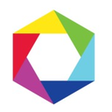
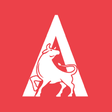

À propos
- Plateforme et infographie : livraison en TypeScript, .NET, Java/Kotlin, Python et Docker/Kubernetes ; recherche de maîtrise en infographie interactive avec C++/OpenGL et Blender (usure de surface en temps réel, frottement et textures).
Expérience professionnelle
Rôles récents en plateformes cloud, enseignement, cybersécurité et solutions numériques.
Août 2026 – Présent
Stagiaire, Développeur(-euse) — Solutions numériques et analytiques
Stage de quatre mois à Montréal au sein du secteur Solutions numériques et analytiques.
Travaux en cours
- Automatiser des processus d’affaires avec SharePoint, TypeScript, C# et .NET
- Contribuer aux intégrations par API et aux travaux de migration depuis SnapLogic
- Préciser les besoins de développement et d’intégration avec une équipe transversale, à partir des besoins d’affaires
- SharePoint
- TypeScript
- C#
- .NET
- SnapLogic
- Intégrations API
- Collaboration interfonctions
- Clarification des besoins
- Communication avec les parties prenantes
Mar 2025 – Jan 2026
Plateformes cloud sécurisées
Piloté la livraison sécurisée de plateformes de recherche sur GCP : CI/CD GitLab, tests automatisés et outils de risque pour les analystes.
Points saillants
- Scindé un monolithe en dépôts par service et piloté 5 pipelines GitLab CI/CD avec runners dédiés sur GCP sur deux clusters GKE ; réseau et observabilité en Terraform pour des mises en production reproductibles
- Containerisé les charges sur Docker, exploité les clusters GKE de recherche sur GCP (réseau des charges) et déployé les services via Terraform pour livrer les changements d'infrastructure avec moins de risque
- Ajouté couverture JUnit et tests E2E Playwright sur 5 microservices Java pour faire remonter les régressions avant mise en production
- Raccordé les builds Android à GitLab CI/CD et les a promus vers la pile GKE gérée par Terraform sur GCP, alignant le mobile sur les backends sous Kubernetes
- Livré une analyse scriptée des risques cybersécurité sur 1000+ risques et 181+ catégories de menaces : score pondéré, priorisation par étoiles et interface Angular de triage pour un contexte homogène entre analystes
- Java
- Kotlin
- Android
- Docker
- Kubernetes
- Terraform
- GitLab CI/CD
- GCP
- JUnit
- Playwright
- Angular
- Collaboration interfonctions
- Communication avec les parties prenantes
- Priorisation avec les analystes de recherche
Sep 2024 – Jan 2026
Chargé de travaux pratiques — DevSecOps (LOG 8100)
Points saillants
- Sous les objectifs LOG 8100 de livraison sécurisée, rédigé et actualisé travaux et supports alignés DevSecOps pour ancrer les pratiques industrielles de sécurité en livraison
- Pour environ 20 équipes en parallèle, structuré et maintenu l'espace GitLab (dépôts, modèles CI/CD, runners, workflows) avec gestion des droits, réduisant friction administrative durant la session
- Lorsque des équipes bloquaient sur les fondamentaux plateforme, coaché construction, déploiement et débogage sous Docker et Kubernetes, débloquant jalons de laboratoire
- Enseigné la sécurité avec exemples OWASP (risques fréquents, pratiques sûres, remédiation) reliés à des scénarios de laboratoire
- Corrigé travaux pratiques et coaché sur les livrables pour des remises plus propres et plus rapides
- GitLab
- CI/CD
- DevSecOps
- Docker
- Kubernetes
- OWASP
- Codage sécurisé
- Linux
- Coaching d'équipe
- Rétroaction constructive
- Animation en salle de classe
Fév 2024 – Présent
Chargé de travaux pratiques
Laboratoires, soutien au projet intégrateur et permanences sur les parcours mobile/UX, intégrateur et données distribuées ; le détail par cours suit.
Points saillants
- Animé laboratoires, soutenu le projet intégrateur et tenu des permanences sur les parcours mobile/UX, intégrateur et données distribuées sur plusieurs sessions à l'ÉTS (p. ex. TCH 057 hiver 2024 ; IND 500 automne 2025 ; TCH 099 été 2024, hiver 2025, été 2025 ; GTI 660 été 2024 ; GTI 320 hiver 2026)
- Face au renouvellement des laboratoires données distribuées, conçu et mis à jour exercices SQL, MongoDB, Kafka et PostgreSQL avec grilles et rétroaction actionnable pour IND 500, GTI 660 et cohortes associées, accordant l'évaluation aux résultats d'apprentissage
- Pour équipes intégrateur TCH 099 bloquées sur l'intégration, débogué architecture et pipelines backend/données ; maintenu l'infrastructure de cours sur Azure et le coaching SCRUM ; guidé les jalons pour que les étudiants livrent des parcours bout-en-bout
- Animé laboratoires mobile/UX TCH 057 et GTI 320 (hiver 2026), en résolvant rapidement questions d'outillage et de concepts
- SQL
- MongoDB
- Kafka
- PostgreSQL
- bases de données distribuées
- Microsoft Azure
- Android Studio
- UI/UX
- SCRUM
- Mentorat étudiant
- Rétroaction fondée sur les grilles
- Patience sous échéances serrées
Cours (par session)
GTI 320 — Programmation mathématique : patterns et algorithmes efficaces (Hiver 2026)
IND 500 — Bases de données distribuées (Automne 2025)
TCH 099 — Projet intégrateur en informatique (Été 2025, Hiver 2025, Été 2024)
GTI 660 — Bases de données multimédias (Été 2024)
TCH 057 — Applications mobiles et expérience utilisateur (Hiver 2024)
Technologies et thèmes (ordre chronologique par session)
- Hiver 2024 Android Studio, UI/UX (TCH 057)
- Été 2024 SQL (GTI 660)
- Été 2024; Hiver 2025; Été 2025 Microsoft Azure, SCRUM, intégration backend et pipelines de données (TCH 099)
- Automne 2025 SQL, MongoDB, Kafka, PostgreSQL, bases de données distribuées (IND 500)
- Hiver 2026 Programmation mathématique : patrons et algorithmes efficaces (GTI 320)
Mai 2023 – Août 2023
Développeur cloud
Plateforme IoT : accès multi-organisation, observabilité, protocoles de streaming et livraisons plus sûres.
Points saillants
- Répondu aux besoins d'accès multi-organisation sur plateforme IoT en concevant un modèle d'abonnement Auth0 à trois niveaux, segmentant les capacités par locataire
- Intégré le SDK Sentry en C# avec Serilog pour tracer les erreurs en production (support et développement)
- Travaillé les contraintes ONVIF et WebRTC pour le streaming vidéo à l'échelle IoT
- Exploité Azure DevOps avec feature flags et promotions reproductibles
- C#
- .NET
- Azure DevOps
- Auth0
- Sentry
- Serilog
- UML
- Microservices
- ONVIF
- WebRTC
- Clarification des besoins
- Communication avec partenaires
- Sang-froid en production
Jan 2022 – Mai 2022
Développeur Back End
Stage backend : intégration nouveaux clients, systèmes hérités, authentification mobile et visibilité opérationnelle.
Points saillants
- Construit un parcours d'inscription en 6 étapes et l'observabilité mobile sur microservices Kotlin/Spring Boot pour 10 000+ utilisateurs actifs
- Pour l'intégration nouveaux clients, conçu campagnes sensibles aux dates d'inscription, personnalisant le premier contact sur canaux marketing
- Ajouté des flux API d'inscription sur systèmes hérités pour activer les nouveaux clients plus vite
- Construit API connexion et MFA Kotlin pour applis mobiles en conservant les contrôles de politique
- Enrichi la pile ELK avec tableaux Kibana et codes d'erreur harmonisés pour des signaux d'incident cohérents côté opérations
- Kotlin
- Spring Boot
- GraphQL
- MongoDB
- Microservices
- Docker Swarm
- Jira
- Kibana
- SAFe
- Travail en équipe agile
- Communication d'incidents
- Coordination interéquipes
Juin 2020 – Déc 2020
Spécialiste Web
Vitrine CommerceBuild : UX, merchandising orienté SEO, parcours d'achat et outils de support.
Points saillants
- Modernisé site commerce bilingue en refondant blog FR/EN pour navigation plus claire et accessibilité renforcée, améliorant expérience d'achat de base
- Déployé étiquettes de vente dynamiques CommerceBuild optimisées recherche/SEO sur les fiches produit
- Implémenté un flux API « Ajouter au panier » sur CommerceBuild pour raccourcir le passage en caisse
- Formé l'équipe en HTML/CSS/JS et assuré le support vitrine, ce qui a réduit les questions répétées sur la maintenance
- Corrigé régressions pop-up, bannière et grille et ajouté un chatbot 3CX pour le support en libre-service
- HTML
- CSS
- JavaScript
- CommerceBuild
- 3CX
- SEO
- Communication client
- Empathie UX
- Formation du personnel
Sep 2020 – Avr 2021
Développeur Full Stack
Stage inventaire : formats multiples d'import, places de marché et prix multi-devises.
Points saillants
- Construit un analyseur Python/Django/Vue.js/PostgreSQL pour flux fournisseurs (XML, JSON, CSV, Excel), remplaçant scripts ponctuels
- Intégré les APIs Facebook Shop et Marketplace pour synchroniser le catalogue sans double saisie
- Ajouté un service de taux de change lié à l'inventaire et aux dates d'effet pour garder les catalogues CAD/USD alignés
- Python
- Django
- Vue.js
- PostgreSQL
- MongoDB
- JavaScript
- REST API
- Git
- Jira
- développement full-stack
- Collaboration à distance
- Résolution de problèmes avec fournisseurs
Mai 2019 – Janvier 2020
Développeur Full Stack
Points saillants
- Sur billetterie Italiarail, collaboré avec Railkey Tech pour performance et UX, intégré Braintree, aligné UI aux nouvelles lignes directrices et étendu APIs d'achat, stabilisant parcours réservation bout-en-bout
- Accéléré support interne en construisant outils Django, Pyramid et jQuery plus tableau d'analyse d'usage des devises, remplaçant feuilles ad hoc pour service client et finance
- En stage, réécrit infrastructure Selenium bout-en-bout puis à temps partiel étendu couverture automatisée, interceptant régressions UI avant production
- Python
- Django
- Pyramid
- JavaScript
- jQuery
- Selenium
- MongoDB
- REST API
- Git
- Jira
- automatisation de tests
- Partenariat QA
- Livraison soucieuse des détails

Algolux
Mai 2017 – Août 2017; Mai 2018 – Août 2018
Stagiaire en ingénierie

AlgoluxPoints saillants
- Automatisé validation caméra/ISP en combinant Ansible, VM Linux/QEMU UEFI pour déploiements REST, imagerie HDR 10 bpp Nexus 6 et services REST Flask pour capture et affichage à distance, réduisant boucles manuelles
- Construit jeux de données vision extérieure (~12 000 images) avec capture/annotation, outillage Python couleur RAW et commande de rigs pour expériences multi-points de vue
- Maintenu débit du laboratoire d'imagerie avec sauvegardes QNAP pour postes Ubuntu, support réseau et serveurs Linux/Windows pour expériences et outillage REST
- Python
- C++
- CUDA
- OpenCV
- Flask
- Ansible
- Linux
- Windows
- REST APIs
- Rigueur en recherche
- Documentation de laboratoire claire
Leadership & Communauté

AlgoÉTS
janv. 2023 – janv. 2025
Président

AlgoÉTSPoints saillants
- Maintient l'infrastructure et la présence web du club ; soutient des projets autour du trading, des données et de la formation en ingénierie
- Dirige le développement et le soutien d'outils internes (plateforme, stratégies, ateliers, automatisation)
- Première compétition de paper trading MarkÉTS à l'ÉTS : 4 154 ordres, 170+ participants, disponibilité 99 %+, 15+ fonctionnalités en live, club porté à 20 membres. Lire le billet MarkÉTS
- Python
- Données et visualisation
- Web
- Infrastructure
- Automatisation d'ateliers
- Leadership communautaire
- Animation d'ateliers
- Coordination bénévole
ETS Memes
sep. 2017 – janv. 2025
Co-créateur & Administrateur
Gestion de page communautaire, création de contenu, modération et opérations.
Points saillants
- Gestion de page communautaire, création de contenu, modération et opérations
- Outils de contenu
- Exploitation de page
- Modération communautaire
- Communication écrite claire
Projets sélectionnés
Mes outils, mes expériences en infographie et mes contributions à des projets partagés.
Projets personnels et open source maintenus
Outils, homelab, intégrations et prototypes que je conçois, publie et fais évoluer moi-même.
-
Diagrammes UML depuis une interface de chat (MCP)
Décrire l'architecture dans une interface de chat, les outils MCP uml-mcp produisent un diagramme UML uml-mcp est un serveur MCP open source pour générer des diagrammes UML depuis une interface de chat. On décrit l'architecture, puis l'outil renvoie des diagrammes utiles pour les revues et la documentation, avec Mermaid, PlantUML ou Kroki. Le même flux fonctionne dans Cursor et dans ChatGPT via un GPT personnalisé. -
Workspace Rust de mathématiques et d’infographie
Matrices denses et creuses, méthodes numériques et transformations 3D, avec un moteur wgpu pour le web et le natif. Un projet exploratoire qui relie mes travaux d’infographie et de systèmes.
Lire l’article sur Dimension -
Tableau de bord homelab avec espaces sauvegardés
Applets Vue et backend Rust/Rocket pour organiser des services intégrés, conserver les dispositions et gérer des conteneurs Docker. Un ancien projet avec ses captures et sa démonstration d’origine.
Lire l’article sur DasherControl -
Infrastructure de reverse proxy : Caddy, Terraform et Ansible
Provisionnement d’un VPS et du DNS Cloudflare, configuration par rôles Ansible et diagnostics de déploiement. Le code reste privé ; l’article présente une architecture simplifiée.
-
Nintendo Switch : streaming PC Apollo/Sunshine (fork Moonlight)Fork homebrew de Moonlight-Switch pour hôtes Apollo : stream Steam Big Picture ou applications bureau depuis un PC, avec surcouche in-app pour raccourcis hôte, presets clavier et stats débit/latence en direct.
-
New 3DS : expérimentations client GameStreamFork maintenu de zoeyjodon/moonlight-N3DS pour Moonlight en homebrew New 3DS — correctifs de build et intégration sur une portable 400×240 avec CPU et Wi-Fi limités.
-
Nintendo Switch : port homebrew sm64coopdxBuild Switch de coop-deluxe/sm64coopdx — Super Mario 64 coop en ligne avec mods Lua. L'utilisateur fournit sa propre ROM obtenue légalement ; le dépôt ne distribue que les sources du port.
-
Homelab Linux : bibliothèque média en Docker ComposeUne stack
docker compose up -dpour monter rapidement une bibliothèque média sur un homelab Linux, avec téléchargements, automatisation *Arr, Plex ou Jellyfin, accès distant et supervision. Les scripts bash du dépôt compagnon servent à préparer un hôte neuf service par service avant de passer au compose complet. -
Afficheur 7 segments ESP32 avec interface web localeFirmware pour carte ESP32 FireBeetle reliée à un afficheur Adafruit I2C 7 segments. Une petite interface web locale permet d'envoyer chiffres et caractères depuis n'importe quel navigateur du réseau.
-
Lenses AR sur SnapchatCréation et publication de lenses AR sur Snapchat (42 lenses, 2017–2020), centrées sur les effets visuels, l'itération rapide et la diffusion mobile. Cumul Lens Insights (mise à jour 2026) : 14,07 M lectures, 20,48 M vues, 712,9 k partages, 10 250 favoris, 804 publications, 470 auteurs uniques.Lire l'article sur les lenses Snapchat
Essayer les lenses publiées (17)
Chaque nom ouvre un aperçu avec cadre d'essai intégré sur lens.snap.com (autoriser la caméra sur ordinateur ; application Snapchat sur mobile).
Contributions et travaux collaboratifs
Une sélection plus courte de contributions acceptées, regroupées entre travail de maîtrise, projets de club et maintenance open source utile dans la durée.
Maîtrise et code de recherche
Travaux liés à la simulation, à l'outillage scientifique et à des usages proches de la maîtrise.
-
Contribution ETSim · packaging, release et outillage de données
Champ de hauteur TrueMap (μm) Contribution au codebase ETSim autour de la structure du package, du flux de release et de la soumission de dépendances. C'est le projet qui se rattache le plus clairement au travail de maîtrise et à l'outillage de recherche. Contribution connexe : support TrueMap dans fredericjs/surfalize pour la métrologie de surface. -
Plateforme événementielle académique et outils de soutien aux participants
Aperçu du site de conférence
Réalisation du site officiel de l'atelier annuel Québec-Ontario pre-SIGGRAPH, avec une expérience simple pour le programme, les infos pratiques et les questions des participants. -
Contribution IPC · frottement anisotrope
Maillage de contact IPC pendant une simulation de frottement Contribution au travail sur le frottement anisotrope dans l'IPC Toolkit. Le travail touche un codebase de simulation sérieux, avec contributions sur le coeur C++/Eigen, les bindings Pythonipctk, les notebooks et les tests.
Travail de club et projets étudiants
Contributions acceptées dans des projets communautaires ou des initiatives étudiantes structurées.
-
Contribution AlgoÉTS · backtesting de nouvelles financières par IAContribution à une stack open source AlgoÉTS en FastAPI et MongoDB qui agrège plus de 60 sources, classe les nouvelles par sentiment et par ticker, puis teste leur lien avec les mouvements de marché. Le projet s'appuie sur un workflow Poetry/Docker et une documentation publique.
-
Contribution AlgoÉTS · similarité de films par embeddings vectoriels

Application Gradio : titre, titres multiples ou notes 
Visualisation t-SNE des voisinages d'embeddings 
Projection 2D de l'espace d'embeddings Travail open source AlgoÉTS sur la similarité de films : embeddings Sentence Transformers dans PostgreSQL avec pgvector, pistes optionnelles Qdrant et Neo4j. Les notebooks Jupyter comparent les distances cosinus et L2 ; une interface Gradio lance la recherche à partir de titres ou de notes.
Intégrations open source maintenues
Forks et contributions qui restent utiles à une base d'utilisateurs plus large.
-
Stockage cloud Blender, fork de MrKuros/Blender-Cloud-Storage
Profils de connexion S3 et MinIO, navigation par dossiers, recherche approximative et import de maillages dans Blender. L’article distingue les changements du fork du travail d’origine.
Lire l’article sur bloc -
Sink Serilog pour Sentry en .NETMaintenance d'un sink .NET qui relie Serilog à Sentry, pour centraliser journaux et erreurs sans alourdir la configuration des applications. Six identifiants NuGet couvrent net6.0 et net10.0 (principal, ASP.NET Core et variantes ciblées), avec publication CI sur les releases GitHub et des exemples prêts à intégrer.
Packages NuGet (version et téléchargements)
Badges chargés depuis shields.io (comme dans le README du dépôt). Dernière version : v1.0.7.2 sur GitHub.
-
Intégration Home Assistant (HACS) pour balances Renpho
Signes vitaux, poids et jauges de composition Tours de taille et objectifs de l'intégration Fork puis maintenance d'une intégration open source issue de neilzilla/hass-renpho, pour faire remonter poids, IMC, masse grasse, tours de taille et objectifs Renpho dans Home Assistant. J'y ai repris le client API, le flux de configuration, le proxy optionnel et la documentation associée.
Autres contributions acceptées
Une courte liste de travaux fusionnés qui ne méritent pas une carte complète, mais qui montrent l'étendue des contributions.
- XITRIX/Moonlight-Switch : correctifs de compilation fusionnés pour les versions récentes de la Nintendo Switch.
- Place1/wg-access-server : mises à jour Docker, retouches d'interface et correctifs DevOps.
En écoute
Statistiques
Chargement de la carte…
Contact
Ouvert aux postes en ingénierie logicielle et aux mandats courts. Je réponds en général sous 24 h.
Appel d'intro (30 min) Formation
-
Août 2023 – Sep 2026
École de technologie supérieure (ÉTS)
Maîtrise, Génie des technologies de l'information
Mémoire : usure de surface en temps réel dans des simulations physiques interactives, avec frottement et textures dynamiques.
-
Sep 2018 – Apr 2023
École de technologie supérieure (ÉTS)
Baccalauréat, Génie des technologies de l'information
Compétences
Parcourez les domaines avec la recherche et les filtres. Les pastilles mènent à la doc ; une petite marque ouvre la certification liée lorsqu'elle existe.
Expertise technique
Parcourir par domaine d'ingénierie · Python
Plateforme et DevOps
17 technologiesCI/CD et déploiement
Conteneurs et systèmes
Observabilité
Aucune compétence ne correspond à cette recherche.
Qualité et tests
5 technologiesQualité et tests
Aucune compétence ne correspond à cette recherche.
Certifications
- Claude Academy: Introduction to Model Context Protocol — Anthropic (oct. 2026)Identifiant: 394c8a269dbc0a77cba976cfb23518c2
- Claude Academy: Building with the Claude API — Anthropic (oct. 2026)Identifiant: 8460bf5dbcf01e13ba601b3461c368b1
- Claude Academy: Claude Platform 101 — Anthropic (oct. 2026)Identifiant: cf78f83954d47d4c41d912ac68b91878
Recommandations
-
« Antoine se distingue non seulement par son expertise technique, mais surtout par son intelligence relationnelle. Il est la preuve qu'un excellent développeur mais aussi un coéquipier exceptionnel et un véritable moteur pour le moral de l'équipe. »
Conférences
- Graphquon 2025 (15–16 nov. 2025) — Présentateur, atelier annuel Québec-Ontario Pre-SIGGRAPH, Université de Toronto
Publications
-
Usure de surface en temps réel dans des simulations physiques interactives
À venir
Recherche sur l’usure des surfaces à l’ÉTS. Lire les travaux de simulation. -
-
Algorithmic Study of the Relation of Peaceful and Violent Subjects to Philosophy Using Wikipedia and a Python Crawler
Avr 2018 -
A 3D variant of Vogel's model to observe prime patterns in a spherical coordinate system
Déc 2017Afficher la vidéo intégrée
Ingénieur logiciel à Montréal, côté plateforme et infographie interactive. Livraisons en TypeScript, .NET, Java/Kotlin, Python et Docker/Kubernetes, avec une recherche de M. Sc. en C++/OpenGL et Blender (usure de surface en temps réel, frottement et textures).
Dernière mise à jour: